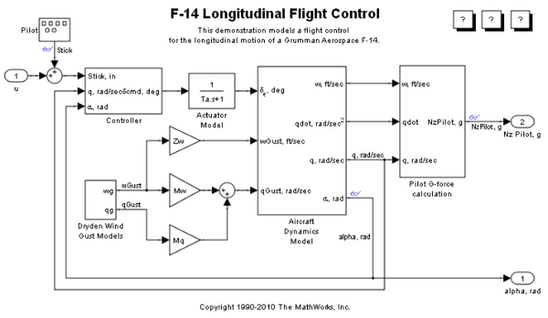
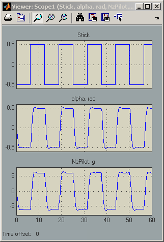
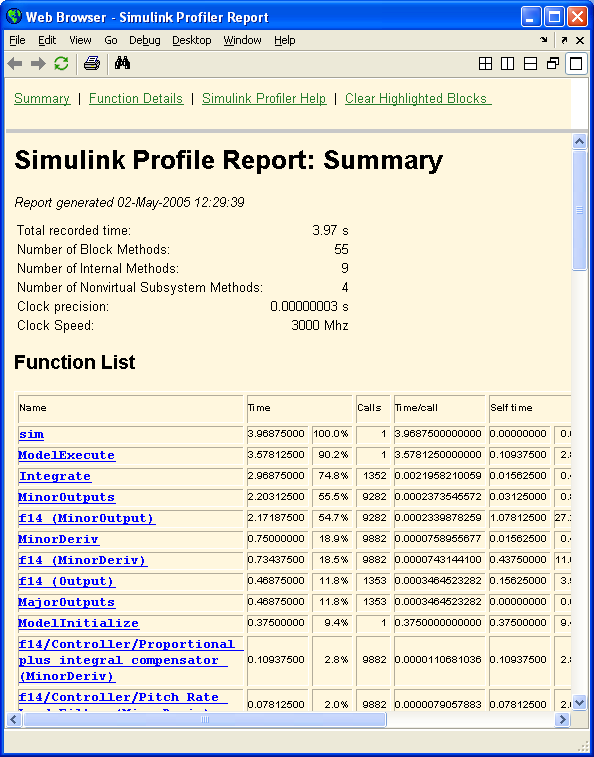

Introduction to Profiling Models
The following example, with the slAccelDemoF14 model, illustrates the the use of Simulink® Accelerator™ profiler feature.
Contents
Activating the Profiler
Simulink® Profiler can be activated by selecting Profiler from the Simulink Tools menu or by issuing a set_param command at the MATLAB® command prompt.
modelName = 'slAccelDemoF14'; load_system(modelName) set_param(modelName,'Profile','on')
Creating a Temporary Working Directory
The profiler writes HTML-files out to the current directory, so first change to a temporary directory.
temp = tempname; mkdir(temp) originalDir = pwd; cd(temp)
Running the Simulation
While the simulation runs, the profiler is collecting data for the report. Once the simulation is complete it creates an HTML report.
open_system(modelName) sim(modelName) 
Viewing the Report
The generated report consists of two HTML-files: a detail file and a summary file. Simulink stores the summary and detail files in MATLAB's working directory and displays the summary file in the MATLAB help viewer when the simulation ends. Hyperlinks in the summary enable you to review the detailed timing information for each function.

Cleaning Up
Close the model and remove the generated files.
bdclose(modelName)
cd(originalDir)
rmdir(temp,'s')